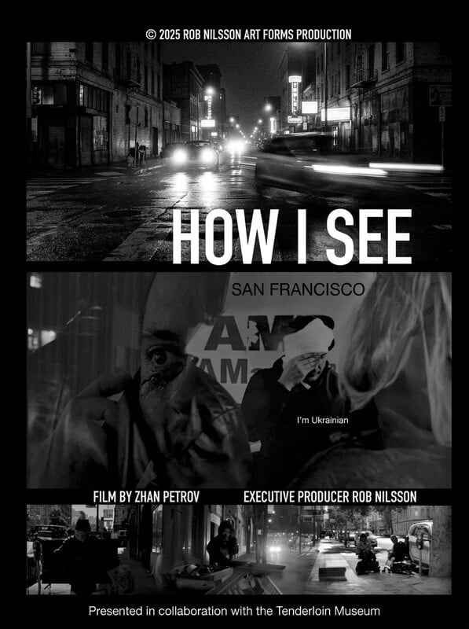

Watch free
$0The full film, streaming in HD. No account, no payment.
Short Documentary
2025 · 15 min · Black & White · English · San Francisco
Official Poster

The full film, streaming in HD. No account, no payment.
Pay what you want, any amount from $1. Goes to the next cut and festival fees.
Checkout opens soon
Shot in stark black and white on the streets of San Francisco’s Tenderloin, a Ukrainian filmmaker confronts the unsettling visual and human parallels between an American neighborhood left behind and the war tearing through his homeland.
Drawn into the Tenderloin through the street-level cinema of his mentor Rob Nilsson, Zhan Petrov walked its blocks and alleys with a camera to listen to people surviving on the margins of one of the wealthiest cities on earth. Interweaving street encounters with reflections alongside Bay Area filmmakers Rob Nilsson and Robert Zagone and Ukrainian war filmmaker Mstyslav Chernov, HOW I SEE holds two landscapes of ruin in a single frame: the sudden destruction of Russian bombardment in Ukraine, and the slow attrition of systemic neglect, displacement, and indifference in San Francisco.
The film’s form was forged directly by the realities of making it. During the first night of shooting, Petrov and his crew were attacked on the street and their camera equipment was smashed—yet technicians managed to salvage every frame of footage from the damaged phones. Refusing either to abandon the work or to film from a tourist’s safe remove, Petrov returned to those same blocks alongside a local guide who knew the neighborhood from within, finishing the film at eye level.
“My subject is the slow death of human decency caused by systemic neglect and the predations of unchecked money and power. This is how I see.”
— Zhan Petrov
Uncut street encounters recorded across San Francisco’s Tenderloin, transit corridors, and train tracks (41:43)—eleven chapters and thirteen voices on camera, divided by person with full verbatim transcripts.
Born in Odessa, Ukraine, in 1992 and named by his father after French New Wave director Jean-Luc Godard, Zhan Petrov graduated from the Ukrainian National Marine Academy and served at sea as a second officer on international merchant vessels before coming to the United States away from the war in Ukraine.
Based in the San Francisco Bay Area, Petrov works across documentary and experimental cinema as a close collaborator of Caméra d’Or and Sundance Grand Jury Prize winner Rob Nilsson within Nilsson’s improvisational Direct Action method. His films include the single-take four-screen feature Love Funeral (2021) and the feature documentary The Way Things Seem to Be, a portrait of Nilsson’s life and work.
Screened as the opening prelude to Rob Nilsson’s CHALK (1996), followed by a filmmaker discussion. Presented in collaboration with the Tenderloin Museum.
Event details at Tenderloin Museum ↗Profile by Doniphan Blair
Read article ↗Dedicated To
All those whose stories and sacrifices may never reach the headlines.
Special appreciation to theaters that keep the spirit of cinema alive.